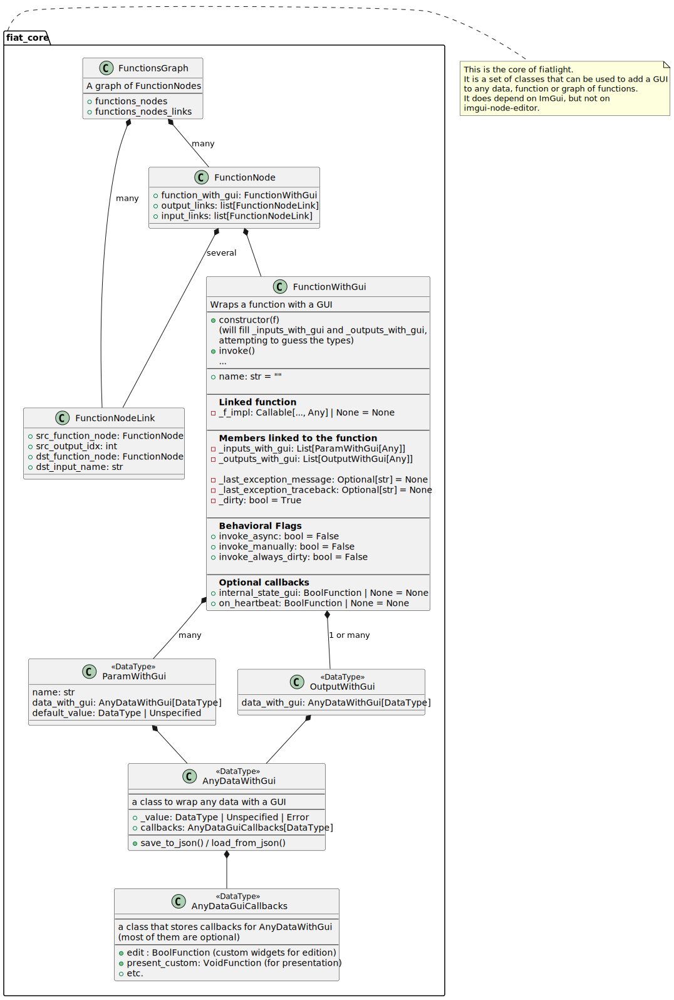

FunctionsGraph#
FunctionsGraph is one of the core classes of FiatLight: it represents a graph of functions,
where the output of one function can be linked to the input of another function.
Source: see its full code online
Manual: FunctionsGraph API
Signature#
Below, you will find the “signature” of the FunctionsGraph class,
with its main attributes and methods (but not their bodies)
Its full source code is available online.
from fiatlight.fiat_notebook import look_at_code
%look_at_class_header fiatlight.fiat_core.FunctionsGraph
class FunctionsGraph:
"""A graph of FunctionNodes
`FunctionsGraph` is one of the core classes of FiatLight: it represents a graph of functions,
where the output of one function can be linked to the input of another function.
See its [full code](../fiat_core/functions_graph.py).
It contains a graph of FunctionNodes modeled as a list of FunctionNode and a list of FunctionNodeLink
(which are the links between the outputs of a FunctionNode and the inputs of another FunctionNode)
This class only stores the data representation of the graph, and does not deal with its GUI representation
(for this, see FunctionGraphGui)
This class is not meant to be instantiated directly. Use the factory methods instead.
Public Members
==============
# the list of FunctionNode in the graph
functions_nodes: list[FunctionNode]
# the list of links between the FunctionNode
functions_nodes_links: list[FunctionNodeLink]
"""
functions_nodes: list[FunctionNode]
functions_nodes_links: list[FunctionNodeLink]
_secret_key: str = 'FunctionsGraph'
class _Construction_Section:
"""
# ================================================================================================================
# Construction (Empty)
# ================================================================================================================
"""
pass
def __init__(self, secret_key: str='FunctionsGraph') -> None:
"""This class should not be instantiated directly. Use the factory methods instead."""
pass
@staticmethod
def create_empty() -> 'FunctionsGraph':
"""Create an empty FunctionsGraph"""
pass
class _Public_API_Add_Function_Section:
"""
# ================================================================================================================
# Public API / Add functions
#
# ---------------------------------------------------------------------------------------------------------------
# Notes:
# You can add either Functions or FunctionWithGui
# - If f is a FunctionWithGui, it will be added as is
# - If f is a standard function:
# - it will be wrapped in a FunctionWithGui
# - the function signature *must* mention the types of the parameters and the return type
# ================================================================================================================
"""
pass
@staticmethod
def from_function(f: Function | FunctionWithGui) -> 'FunctionsGraph':
"""Create a FunctionsGraph from a single function, either a standard function or a FunctionWithGui"""
pass
@staticmethod
def from_function_composition(functions: Sequence[Function | FunctionWithGui]) -> 'FunctionsGraph':
"""Create a FunctionsGraph from a list of functions that will be chained together
i.e. the output[0] of one function will be the input[0] of the next function
"""
pass
def add_function_composition(self, functions: Sequence[Function | FunctionWithGui]) -> None:
"""Add a list of functions that will be chained together"""
pass
def add_function(self, f: Function | FunctionWithGui) -> FunctionNode:
"""Add a function to the graph. It will not be linked to any other function. Returns the FunctionNode added."""
pass
def add_gui_node(self, gui_function: GuiFunctionWithInputs, label: str | None=None, gui_serializable_data: BaseModel | None=None) -> FunctionNode:
pass
def add_task_node(self, task_function: GuiFunctionWithInputs, label: str | None=None) -> FunctionNode:
pass
def add_markdown_node(self, md_string: str, label: str='Documentation', text_width_em: float=20.0, unindented: bool=True) -> FunctionNode:
pass
class _Private_API_Add_Function_Section:
"""
# ================================================================================================================
# Private API / Add functions
# ================================================================================================================
"""
pass
def _add_function_with_gui(self, f_gui: FunctionWithGui) -> FunctionNode:
pass
def _add_function(self, f: Function) -> FunctionNode:
pass
@staticmethod
def _create_from_function_composition(functions: Sequence[Function | FunctionWithGui]) -> 'FunctionsGraph':
"""Create a FunctionsGraph from a list of PureFunctions([InputType] -> OutputType)
* They should all be pure functions
* The output[0] of one should be the input[0] of the next
"""
pass
class _Graph_Manipulation_Section:
"""
# ================================================================================================================
# Graph manipulation
# ================================================================================================================
"""
pass
def _can_add_link(self, src_function_node: FunctionNode, dst_function_node: FunctionNode, dst_input_name: str, src_output_idx: int) -> Tuple[bool, str]:
"""Check if a link can be added between two functions. (private)"""
pass
def _add_link_from_function_nodes(self, src_function_node: FunctionNode, dst_function_node: FunctionNode, dst_input_name: str | None=None, src_output_idx: int=0) -> FunctionNodeLink:
"""Add a link between two functions nodes (private)"""
pass
def add_link(self, src_function: str | Function | FunctionWithGui, dst_function: str | Function | FunctionWithGui, dst_input_name: str | None=None, src_output_idx: int=0) -> None:
"""Add a link between two functions, which are identified by their *unique* names
If a graph reuses several times the same function "f",
the unique names for this functions will be "f_1", "f_2", "f_3", etc.
"""
pass
def merge_graph(self, other: 'FunctionsGraph') -> None:
"""Merge another FunctionsGraph into this one"""
pass
def function_with_gui_of_name(self, name: str | None=None) -> FunctionWithGui:
"""Get the function with the given unique name"""
pass
def _would_add_cycle(self, new_link: FunctionNodeLink) -> bool:
"""Check if adding a link would create a cycle (private)"""
pass
def has_cycle(self) -> bool:
"""Returns True if the graph has a cycle"""
pass
def _has_cycle_from_node(self, fn: FunctionNode, path: Set[FunctionNode] | None=None) -> bool:
"""Check if there is a cycle starting from a given node (private)"""
pass
def _remove_link(self, link: FunctionNodeLink) -> None:
"""Remove a link between two functions (private)"""
pass
def _remove_function_node(self, function_node: FunctionNode) -> None:
"""Remove a function node from the graph (private)"""
pass
class _Utilities_Section:
"""
# ================================================================================================================
# Utilities
# ================================================================================================================
"""
pass
def function_node_unique_name(self, function_node: FunctionNode) -> str:
"""Return the unique name of a function node:
If a graph reuses several times the same function "f",
the unique names for this functions will be "f_1", "f_2", "f_3", etc.
"""
pass
def _function_node_with_name_or_is_function(self, name_or_function: str | Function | FunctionWithGui) -> FunctionNode:
"""Get the function node with the given name or function"""
pass
def _function_node_with_unique_name(self, function_name: str) -> FunctionNode:
"""Get the function with the unique name"""
pass
def all_function_nodes_with_unique_names(self) -> Dict[str, FunctionNode]:
"""Return a dict of all the function nodes, with their unique names as keys (private)"""
pass
def shall_display_refresh_needed_label(self) -> bool:
"""Returns True if any function node shall display a "Refresh needed" label"""
pass
class _Serialization_Section:
"""
# ================================================================================================================
# Serialization
# Note: save_gui_options_to_json() and load_gui_options_from_json()
# are intentionally not implemented here
# See FunctionsGraphGui (which does deals with the GUI)
# ================================================================================================================
"""
pass
def save_user_inputs_to_json(self) -> JsonDict:
"""Saves the user inputs, i.e. the functions params that are editable in the GUI
(this excludes the params that are set by the links between the functions)"""
pass
def load_user_inputs_from_json(self, json_data: JsonDict) -> None:
"""Restores the user inputs from a json dict"""
pass
def save_graph_composition_to_json(self) -> JsonDict:
"""Saves the graph composition to a json dict.
Only used when the graph composition is editable.
"""
pass
def load_graph_composition_from_json(self, json_data: JsonDict, function_factory: FunctionWithGuiFactoryFromName) -> None:
"""Loads the graph composition from a json dict."""
pass
Architecture#
Below is a PlantUML diagram showing the architecture of the fiat_core module.
See the architecture page for the full architecture diagrams.
from fiatlight.fiat_notebook import plantuml_magic
%plantuml_include class_diagrams/fiat_core.puml
